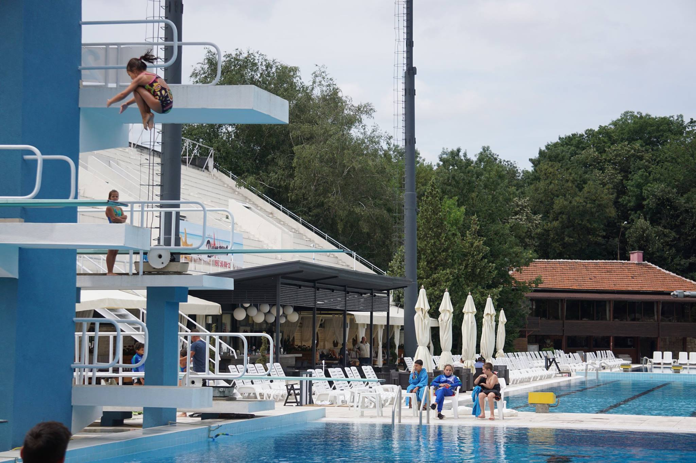

Bulgarian State Championship Diving 2017
И тази година Калина показа характер и хъс на държавното първенство. В категория до 9 г. тя
завоюва 2 сребърни медала - на 1м и 3 м трамплин. Въпреки, че беше изненадана в последния
момент от смяната на втората дисциплина (трябваше да бъде кула), нашата състезателка не се
притесни и под вещите насоки на треньора Юли и опитната скачачка Нина успя да се качи пак на
почетната стълбичка. Най-малката участничка в тази възрастова група - Ралица на 6,5г. също
се представи добре, но остана на предпоследното място след лошо приводняване на най-новия си
скок. Клубът завоюва още 3 златни медала благодарение на Нина , която беше безапелационна и
на трите дисциплини в своята възрастова група.
